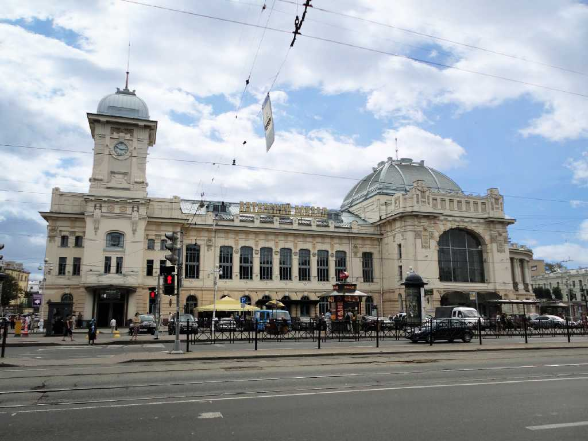
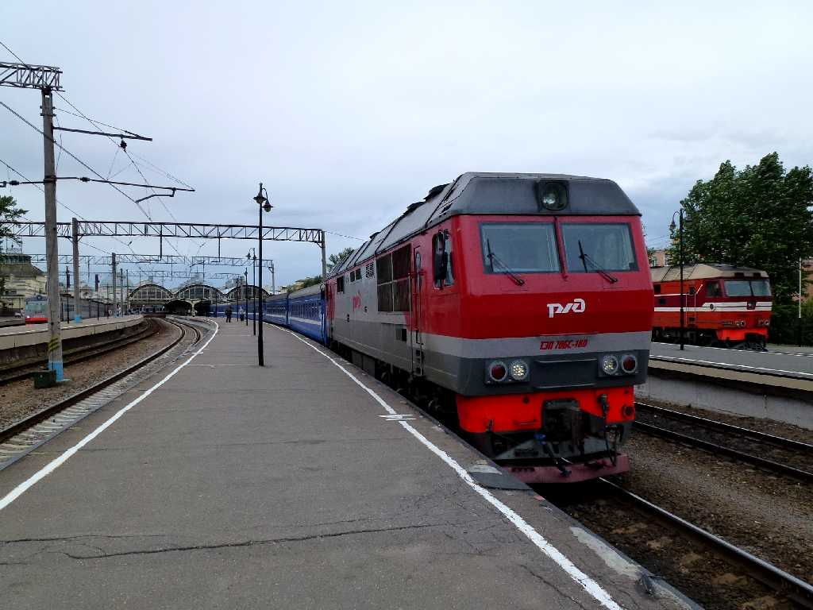

Vitebsky Station Sankt Peterburg
８０日間世界一周鉄道の旅で２５日目 ロシア鉄道４９番列車でサンクトペテルブルグのロシア最古の駅舎ヴィチェプスキー駅を離れワルシャワ中央駅に向け走る

July 18 2013 Vitebsky Station
Russian Railways Train No.49 July 18 13:30 Vitebsky Saint Petersburg to July 19 18:55 Warsaw
Vitebsky Station